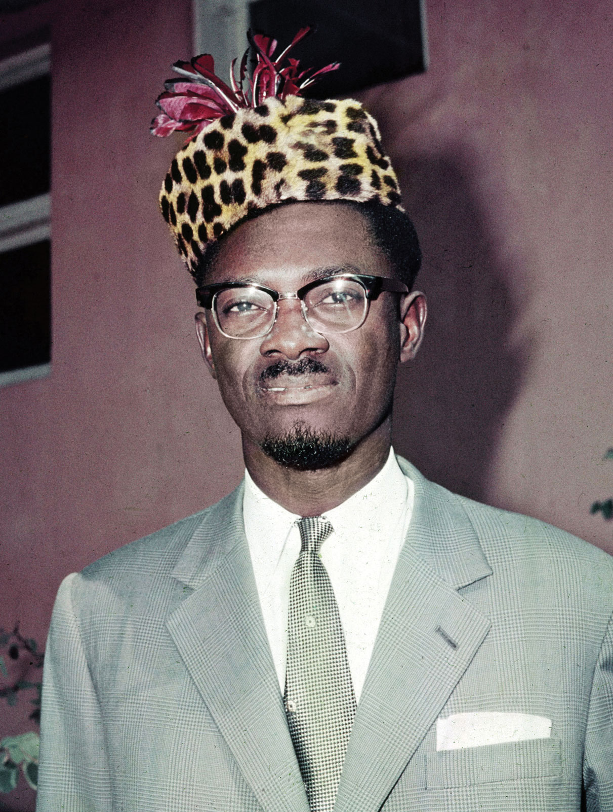

Patrice Emery Lumumba 1960
Patrice Lumumba's life time line:
- 1929: Birth of Lumumba at Katako-Kombe, Sankuru
- 1955: Became a regional president of a purely congolese trade union
- 1958: Along with other congoleses launched the Congolese National Movement (Mouvement National Congolais, MNC)
- December-1958 Attended the All African's people conference in Akra Ghana
- 1960: Leads the movment of the liberation of the DRC
- July-1960: he is elected by the parliament as the prime minister
- September-1960: he is removed unrighfully from office by the then President Kasavubu
- September-1960: The power is seized by the army led by Lt Col Mobutu Seseseko
- October - 1960: Lumumba is placed under house arrest in Leopoldville
- October - 1960: Lumumba tries to escape his residence to join his allies in Stanleyvill(Kisangani)
- January - 1961: Lumumba and two of his associates were flown to Elisabeth Ville (Lubumbashi)
- January - 1961: Lumumba, Bartelemy Okito and Mpolo where executed by a Belgian commanded firing squad